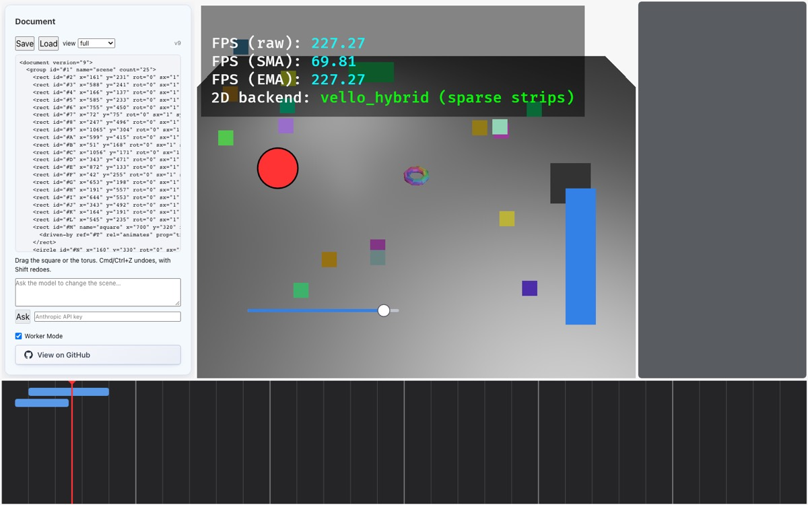

Part 7 of 7 · Model surface FFI & shell
The model surface
Step 7's exit criterion: the model reads a tree view, emits one <edit> with a <set>, and the change lands in the same undo stack with actor: Model. This part is mostly TypeScript, and it's where the earlier parts pay off. The view already exists (Part 3), transactions are already atomic and report every error (Part 3), and the bridge already picks up any applied transaction from the log (Part 4). What's left is translation: markup in, ops out.
Store::apply's error list and sync_document reading the log. Parts 5 and 6 explain the .bind and <driven-by> the model will see.src-ui/model/{index,api,schema,edit,manifest,agent,transport}.ts (all uncommitted), the document half of src/web_ffi.rs, and the modelEdit/modelAsk cases in src-ui/worker.ts.7.1How should a model edit a scene?
Hand it the file and take back a new file. Diff the two to find out what changed. The model has to reproduce everything it didn't mean to change, ids get lost or invented, and diffing has to guess intent (“was this node moved, or deleted and recreated?”). One hallucinated line corrupts the scene.
One tool call per op, with JSON schemas. It's precise, but verbose. Each op needs raw order keys and fully qualified paths (fill.color as {"rgba":[1,0,0,1]}), and a multi-step change is many round trips with no atomicity between them.
Vision doc 04's thesis 6: read markup, write ops. The model reads the view from Part 3 and replies with one <edit> block of declarative verbs, each naming its target by id:
<edit expect-version="7">
<create id="$n" type="rect" parent="#1" name="from-model" x="300" y="120"
w="{= #O.slider.value * 100}" h="40" color="#22aa55"/>
<set id="#N" fill.color="#ff3333"/>
</edit>TypeScript turns that into one transaction: it resolves $n to a real id, asks Rust for order keys, maps w to size.w and color to fill.color, coerces #22aa55 to a colour, and turns {= …} into a binding. It then applies the transaction synchronously, with a version check. If it's rejected, the model gets back markup naming every error, and one retry.
That is the smoke test’s first edit, with the expect-version check a real model turn would add. Here is its result:

__iron.edit(…) from the smoke test: circle #N is red, and the new green rect sits under the FPS overlay near the top. Its width is bound to the slider. The version is now v9, and the panel shows the square at its animated x="700" because this transaction triggered a refresh (see Part 6's note).7.2Where it runs, and why
The model surface is TypeScript, but it runs in the worker, next to the wasm, so every question it asks the store (what's the schema, give me a view, reserve three ids) is a plain synchronous function call. The only asynchronous part is the network call to the model. The shell sends a message; the worker handles it:
// Model surface: apply an <edit> as the model, or ask a model for one.
case "modelEdit":
try {
const outcome = modelEdit(glue, this.appHandle, data.xml, data.label);
self.postMessage({ ty: "modelEditResult", requestId: data.requestId, ok: outcome.ok, outcome });
} catch (e) {
self.postMessage({ ty: "modelEditResult", requestId: data.requestId, ok: false, error: String(e) });
}
break;
case "modelAsk":
modelAsk(glue, this.appHandle, data.instruction, { apiKey: data.apiKey, model: data.model })
.then((result) => self.postMessage({ ty: "modelAskResult", requestId: data.requestId, ok: result.ok, result }))
.catch((e) => self.postMessage({ ty: "modelAskResult", requestId: data.requestId, ok: false, error: String(e) }));
break;modelEdit applies markup you supply (the smoke test uses it, and so can you: await __iron.edit('<edit>…</edit>') in the console). modelAsk runs a full turn with a real model. Both start in model/index.ts, which is two tiny functions wiring the pieces together (index.ts:11–23). The same cases exist in main-thread-adapter.ts for the non-worker mode.
modelAsk. Everything except the Claude API call is synchronous and in-process. The bridge doesn't need telling: the transaction is in the log, and the next sync_document reconciles it (Part 4).7.3What Rust exposes to it
Five FFI functions were added for the model surface. The central one applies a transaction now and returns JSON, instead of queueing it like the bridge's queues do:
/// Apply a transaction now and answer synchronously: the model surface needs
/// every error in one round trip (doc 04 §9.5). `expect_version`, when not
/// zero, is compare-and-swap: the transaction is refused if the document has
/// moved since the caller last read it. Returns JSON:
/// `{"ok":true,"version":N}` or `{"ok":false,"errors":[...]}`.
#[wasm_bindgen]
pub fn document_apply(ptr: u64, transaction_json: String, expect_version: u32) -> String {
let app = unsafe { &mut *(ptr as *mut WorkerApp) };
let input: iron_document::TransactionInput = match serde_json::from_str(&transaction_json) {
Ok(t) => t,
Err(e) => {
return serde_json::json!({"ok": false, "errors": [{"op": null, "kind": "parse", "message": e.to_string()}]})
.to_string();
}
};
let Some(mut store) = app.world_mut().get_resource_mut::<crate::document_bridge::DocumentStore>() else {
return serde_json::json!({"ok": false, "errors": [{"op": null, "kind": "no_store", "message": "document bridge not installed"}]}).to_string();
};
let current = store.0.document().version().0 as u32;
if expect_version != 0 && expect_version != current {
return serde_json::json!({
"ok": false,
"version": current,
"errors": [{"op": null, "kind": "stale", "message": format!("expected version {expect_version}, document is at {current}; re-read before retrying")}]
})
.to_string();
}
let result = match store.0.apply(input) {
Ok(applied) => serde_json::json!({"ok": true, "version": applied.version.0}),
Err(errors) => serde_json::json!({"ok": false, "version": current, "errors": errors}),
};
if let Some(mut active_info) = app.world_mut().get_resource_mut::<ActivityControl>() {
active_info.remaining_frames = 10;
}
result.to_string()
}expect_version is compare-and-swap. The model read <document version="7">. If you dragged something while it was thinking, the document is now at 8, and its edit (based on a stale view) is refused with a stale error telling it to re-read. On success or failure it returns JSON: {"ok":true,"version":9} or the full error list from Part 3.
The other four keep the store in charge of things only it should decide:
| FFI call | Returns | Why the model surface can't do this itself |
|---|---|---|
document_next_ids(n) | ["#U","#V",…] | Ids come from the store's counter (Part 3's id rules). |
document_next_relation_ids(n) | ["r3",…] | Same, for relations. |
document_place(parent, after, count) | ["a4","a5"] | Order keys are the store's business (Part 2). The model says where (“after #M”, “at the end”); Rust computes the keys. |
document_schema() | The registry as JSON | The single source of vocabulary (Part 2, 2.6). |
api.ts wraps each in one line, so the rest of the TypeScript never touches the glue directly:
export interface DocumentApi {
schema(): Schema;
view(query: { scope?: string | null; fidelity: 'skeleton' | 'summary' | 'full'; depth?: number | null }): string;
version(): number;
nextIds(n: number): string[];
nextRelationIds(n: number): string[];
/** Order keys under `parent` ('' = roots) after `after` ('' = front, 'end' = back). */
place(parent: string, after: string, count: number): string[];
apply(transaction: object, expectVersion: number): ApplyResult;
}
export function makeDocumentApi(glue: Glue, handle: bigint): DocumentApi {
let schema: Schema | null = null;
return {
schema: () => (schema ??= JSON.parse(glue.document_schema())),
view: (q) => glue.document_view(handle, JSON.stringify({ scope: null, depth: null, ...q })),
version: () => {
const m = glue.document_view(handle, JSON.stringify({ scope: null, fidelity: 'skeleton', depth: 0 })).match(/version="(\d+)"/);
return m ? Number(m[1]) : 0;
},
nextIds: (n) => JSON.parse(glue.document_next_ids(handle, n)),
nextRelationIds: (n) => JSON.parse(glue.document_next_relation_ids(handle, n)),
place: (parent, after, count) => JSON.parse(glue.document_place(handle, parent, after, count)),
apply: (tx, expect) => JSON.parse(glue.document_apply(handle, JSON.stringify(tx), expect)),
};
}version()(lines 31–34) gets the version by rendering a skeleton view and matchingversion="(\d+)"with a regex. It works, but a one-linedocument_version()FFI would be more direct.expect_version == 0means “don't check” (web_ffi.rs:444), so an edit can't compare-and-swap against a brand-new empty document at version 0. That's harmless today, because the demo scene is v1 the moment the app opens.
7.4Attribute names and values: schema.ts
The model writes x="300", not transform2d.x = {"number":300}. Two functions bridge the gap, and both are driven by the schema from Rust, so they can't disagree with the validator.
/**
* Resolve an attribute name on a node type to `component.field`. A bare
* field name resolves to the first component, in the type's declared order,
* that has it (so `color` on a rect is `fill.color`, and `stroke.color` must
* be written in full); `name` is the Name component's text.
*/
export function resolveLeaf(schema: Schema, type: string, attr: string): { component: string; field: string; kind: Kind } {
if (attr.includes('.')) {
const [component, field] = attr.split('.', 2);
const kind = schema.components[component]?.[field];
if (!kind) throw new Error(`unknown leaf "${attr}"`);
return { component, field, kind };
}
if (attr === 'name') return { component: 'name', field: 'text', kind: 'string' };
const spec = schema.types[type];
if (!spec) throw new Error(`unknown node type "${type}"`);
const hits = spec.components
.map((c) => c.kind)
.filter((c) => schema.components[c]?.[attr] !== undefined);
if (hits.length >= 1) return { component: hits[0], field: attr, kind: schema.components[hits[0]][attr] };
const all = spec.components.flatMap((c) => Object.keys(schema.components[c.kind] ?? {}).map((f) => `${c.kind}.${f}`));
throw new Error(`"${attr}" is not a field of ${type}; available: ${all.join(', ')}`);
}resolveLeaf turns a bare field name into a full leaf path. It picks the first component in the type's declared order that has that field, so on a rect color means fill.color, because fill is listed before stroke in the registry. Anything else must be written in full (stroke.color), and an unknown name is an error listing the valid ones.
/**
* Coerce liberally (doc 04 §9.4): `12`, `"12"`, `12px` are all 12; colours
* take `#rrggbb[aa]` or `rgba(...)`; vectors take `1,2` or `[1, 2]`; any
* attribute may instead carry a binding as `{= expr}`.
*/
export function coerce(kind: Kind, raw: string): SlotJson {
const text = raw.trim();
const bind = text.match(/^\{=\s*([\s\S]*?)\s*\}$/);
if (bind) return { bind: bind[1] };
switch (kind) {
case 'number': {
const n = Number(text.replace(/(px|s|deg)$/, ''));
if (Number.isNaN(n)) throw new Error(`"${raw}" is not a number`);
return n;
}
case 'bool':
if (/^(true|yes|on|1)$/i.test(text)) return true;
if (/^(false|no|off|0)$/i.test(text)) return false;
throw new Error(`"${raw}" is not a bool`);
case 'string':
return raw;
case 'enum':
return { enum: text };
case 'ref':
return { ref: text.startsWith('#') ? text : `#${text}` };
case 'color':
return { rgba: parseColor(text) };
case 'vec2':
case 'vec3': {
const v = parseVector(text);
const n = kind === 'vec2' ? 2 : 3;
if (v.length !== n) throw new Error(`"${raw}" needs ${n} numbers`);
return v;
}
case 'any': {
if (/^-?\d/.test(text) && !text.includes(',')) return Number(text);
if (/^[\[(]?\s*-?\d/.test(text) && text.includes(',')) return parseVector(text);
if (text.startsWith('#') && text.length >= 7) return { rgba: parseColor(text) };
if (/^(true|false)$/i.test(text)) return text.toLowerCase() === 'true';
return raw;
}
}
}coerce is deliberately forgiving about format (vision doc 04 §9.4): "12", "12px" and "12s" are all 12, and colours may be #rrggbb, #rrggbbaa or rgba(…). It's strict about meaning: "abc" for a number is an error. And any attribute of any kind may instead be {= expression} (line 53), which becomes {"bind": "…"}, a Slot::Bound once it reaches Rust.
7.5The edit parser: four passes, one transaction
parseEdit in edit.ts uses the fast-xml-parser library (a new dependency in package.json) to read the markup, then makes four passes over the verbs:
// Pass 1: verbs in order, with their attributes.
type Verb = { verb: (typeof VERBS)[number]; attrs: Record<string, string>; index: number };
const verbs: Verb[] = [];
for (const child of root.edit as any[]) {
const verb = Object.keys(child).find((k) => k !== ':@');
if (!verb) continue;
if (!(VERBS as readonly string[]).includes(verb)) throw new EditError(`unknown verb <${verb}>; use ${VERBS.join(', ')}`);
verbs.push({ verb: verb as Verb['verb'], attrs: { ...(child[':@'] ?? {}) }, index: verbs.length });
}
// Pass 2: mint ids for aliases, in order of creation.
const aliasNames = verbs.filter((v) => v.verb === 'create').map((v) => v.attrs.id).filter((id) => id?.startsWith('$'));
const minted = api.nextIds(aliasNames.length);
const aliases: Record<string, string> = {};
aliasNames.forEach((a, i) => (aliases[a] = minted[i]));
const resolveId = (raw: string | undefined, what: string, index: number): string => {
if (!raw) throw new EditError(`op ${index}: missing ${what}`, index);
if (raw.startsWith('$')) {
const id = aliases[raw];
if (!id) throw new EditError(`op ${index}: alias ${raw} is not created in this edit`, index);
return id;
}
return raw.startsWith('#') || raw.startsWith('r') ? raw : `#${raw}`;
};
// Pass 3: placements, batched per (parent, after) so keys are distinct.
const placementKeys = new Map<string, string[]>();
const wantPlacement: { key: string; index: number }[] = [];
const placementOf = (v: Verb): { parent: string; after: string } => {
const parentRaw = v.verb === 'reparent' ? v.attrs.to : v.attrs.parent;
const parent = parentRaw ? resolveId(parentRaw, 'parent', v.index) : '';
const after = v.attrs.first !== undefined ? '' : v.attrs.after ? resolveId(v.attrs.after, 'after', v.index) : 'end';
return { parent, after };
};
for (const v of verbs) {
if (v.verb === 'create' || v.verb === 'reparent') {
const p = placementOf(v);
const key = `${p.parent}|${p.after}`;
wantPlacement.push({ key, index: v.index });
}
}
for (const key of new Set(wantPlacement.map((w) => w.key))) {
const count = wantPlacement.filter((w) => w.key === key).length;
const [parent, after] = key.split('|');
// A parent created in this same edit has no children yet; keys start fresh.
const keys = minted.includes(parent) ? freshKeys(count) : api.place(parent, after, count);
placementKeys.set(key, keys);
}
const takeKey = (v: Verb) => {
const p = placementOf(v);
const keys = placementKeys.get(`${p.parent}|${p.after}`)!;
return { parent: p.parent || null, order: keys.shift()! };
};- Collect verbs (67–75) in order, rejecting unknown ones (
<move>gets “unknown verb; use create, set, add…”). - Mint aliases (77–90). Every
<create id="$something">gets a real id fromapi.nextIds, in order, so later verbs in the same edit can sayparent="$group"orid="$n". The model never invents a real id. - Batch placements (92–119). Creates and reparents are grouped by (parent, after), and each group asks Rust for all its keys in one
api.placecall. Batching matters: two creates both going “at the end of #1” must get two different keys in the right order, which separate calls wouldn't give, since the first create hasn't been applied yet. A parent created in the same edit has no children yet, so its keys are generated locally (line 112). - Build ops (121–203). Each verb becomes op JSON in exactly the shape Rust's
Opdeserialises (Part 3, 3.2).
Here is the create and set arm of pass 4. You can see resolveLeaf and coerce doing the work:
switch (v.verb) {
case 'create': {
const type = a.type;
if (!type) throw at('missing type');
if (!schema.types[type]) throw at(`unknown type "${type}"; types: ${Object.keys(schema.types).join(', ')}`);
const id = a.id?.startsWith('$') ? aliases[a.id] : resolveId(a.id ?? minted[0], 'id', v.index);
const { parent, order } = takeKey(v);
const comps: Record<string, Record<string, SlotJson>> = {};
for (const [k, raw] of Object.entries(a)) {
if (skip.has(k)) continue;
let leaf;
try {
leaf = resolveLeaf(schema, type, k);
comps[leaf.component] ??= {};
comps[leaf.component][leaf.field] = coerce(leaf.kind, raw);
} catch (e) {
throw at(e instanceof Error ? e.message : String(e));
}
}
for (const c of schema.types[type].components) if (c.required) comps[c.kind] ??= {};
ops.push({ t: 'create', id, ty: type, parent, order, components: Object.entries(comps).map(([k, f]) => ({ [k]: f })) });
break;
}
case 'set':
case 'add': {
const id = resolveId(a.id, 'id', v.index);
const type = a.type; // optional hint for bare attribute names
const pairs: [string, string][] = [];
if (a.path) pairs.push([a.path, a.bind !== undefined ? `{= ${a.bind}}` : (a.value ?? '')]);
for (const [k, raw] of Object.entries(a)) if (!skip.has(k)) pairs.push([k, raw]);
if (pairs.length === 0) throw at('nothing to set; give leaf attributes such as x="10" or path="size.h" value="10"');
const byComp: Record<string, Record<string, SlotJson>> = {};
for (const [k, raw] of pairs) {
let leaf;
try {
leaf = k.includes('.') || !type ? resolveLeafAnyType(schema, k) : resolveLeaf(schema, type, k);
const slot = coerce(leaf.kind, raw);
if (v.verb === 'set') ops.push({ t: 'set', id, path: `${leaf.component}.${leaf.field}`, slot });
else (byComp[leaf.component] ??= {})[leaf.field] = slot;
} catch (e) {
throw at(e instanceof Error ? e.message : String(e));
}
}
for (const [comp, fields] of Object.entries(byComp)) ops.push({ t: 'add_comp', id, comp: { [comp]: fields } });
break;
}Line 148 fills in any required component the model didn't mention with an empty object, which Rust fills with defaults, so <create type="rect"/> alone is valid. The verbs map onto ops like this:
| Markup verb | Becomes |
|---|---|
<create id="$a" type="rect" parent="#1" after="#M" x="10" …/> | Create with components grouped from the attributes |
<set id="#P" x="12" size.h="{= …}"/> | One Set per attribute |
<add id="#N" stroke.width="2"/> | AddComp per component named |
<delete id="#3"/> | Delete (with its descendants) |
<reparent id="#4" to="#1" first="true"/> | Reparent with a key from document_place |
<link from="#S" to="#Q" rel="animates" offset="0.5"/> | Link; extra attributes become data |
<unlink id="r1"/> | Unlink |
Applying, and answering in the model's terms
/** Parse and apply one edit as the model, answering in the model's terms. */
export function applyEdit(api: DocumentApi, xml: string, label = 'model edit'): EditOutcome {
let parsed: ParsedEdit;
try {
parsed = parseEdit(api, xml);
} catch (e) {
const err = e instanceof EditError ? e : new EditError(String(e));
return { ok: false, failure: failed(api.version(), [{ op: err.line ?? null, kind: 'parse', message: err.message }]) };
}
const result: ApplyResult = api.apply(
{ label, actor: 'model', ts: Date.now(), ops: parsed.ops },
parsed.expectVersion,
);
if (result.ok) return { ok: true, version: result.version, aliases: parsed.aliases };
return { ok: false, version: result.version, failure: failed(result.version ?? api.version(), result.errors ?? []) };
}
function failed(version: number, errors: { op: number | null; kind: string; message: string }[]): string {
const lines = errors.map((e) => ` <error${e.op === null ? '' : ` op="${e.op}"`} kind="${e.kind}">${escapeXml(e.message)}</error>`);
return `<edit-failed applied="none" version="${version}">\n${lines.join('\n')}\n</edit-failed>`;
}Parse errors and store errors come back the same way: as an <edit-failed applied="none" version="N"> block with one <error op="…" kind="…"> per problem. The model reads that just as it read the view. The smoke test's deliberately bad edit, <set id="#zz" x="1"/><set id="#N" radius.r="{= #N.radius.r + 1}"/>, gets back two errors in one reply: #zz doesn't exist, and the binding would depend on itself. Nothing is applied.
<create>effectively needs anid. Without one, line 134 falls back tominted[0], which is either undefined (a “missing id” error) or the id already given to the first alias (a “already exists” error from Rust). Either way the model gets a clear error, but the manifest could say “id is required”.after="$alias"only works when the parent is also new. If a created node is placed after another node created in the same edit under an existing parent,api.placeis asked to place after an id that doesn't exist yet and throws.applyEditcatches that and reports it as a parse error, so it fails safely, not silently.
7.6What the model is told: the manifest
The system prompt is generated from the schema at runtime (manifest.ts:8). The node types and component fields in it are printed from document_schema(), so they can't drift from what the validator accepts (vision doc 04 §9.7). The fixed prose around them explains the view, the seven verbs, value syntax, the expression grammar and the time model, and ends with the retry contract:
VERBS, inside <edit expect-version="N"> (N = the version you read)
<create id="$a" type="rect" parent="#1" x="10" y="20" w="30" h="30" color="#ff0000"/>
$a is an alias you choose; later verbs in the same edit may use it.
after="#id" or first="true" places it; default is last child. parent omitted = root.
<set id="#P" x="12" size.h="{= #O.slider.value * 200}"/>
attributes are leaves: component.field, or a bare field name, which means the
first of the node's components (in the order listed above) that has that field:
on a rect, color is fill.color, so a stroke colour is written stroke.color.
{= expr} binds the leaf to an expression instead of a value.
<add id="#N" stroke.width="2"/> add an optional component with fields
<delete id="#3"/> deletes the subtree
<reparent id="#4" to="#1" after="#2"/>
<link from="#clip" to="#node" rel="animates" offset="0.5"/>
<unlink id="r1"/>
VALUES
numbers 12 or 1.5; bool true/false; colours #rrggbb or #rrggbbaa; vectors 1,2 or
0,1.5,0; enums by name (easing: linear ease_in ease_out ease_in_out; host: canvas dom).
Document 2D space is y-down with the origin at the viewer's top-left, one unit per
pixel; rect origin is its top-left corner; circles are centred.
EXPRESSIONS (for {= …} bindings)
#id.component.field references a leaf; + - * / % < <= > >= == != && || !;
cond ? a : b; functions abs floor ceil round min(a,b) max(a,b) clamp(x,lo,hi)
lerp(a,b,t) scale(x,d0,d1,r0,r1). A binding may not depend on itself.
TIME
A clip node (child of a timeline) has timing.start, timing.dur, timing.easing and
clip.prop (the leaf it drives, e.g. transform2d.x), clip.from, clip.to. It reaches
its target through <link from="#clip" to="#target" rel="animates"/>. A leaf may be
bound or animated, not both.
If an <edit-failed> block comes back, fix exactly what it names and send one new
<edit> with the version it reports.`;The plan's step 7 mentioned Zod schemas. The model chose schema-driven coercion instead, recorded in the plan's §5.12: one registry schema drives both the prompt and the parser, so a second schema language would be one more thing that could drift.
7.7One turn, one retry, one transport
export async function ask(api: DocumentApi, transport: ModelTransport, instruction: string): Promise<AskResult> {
const system = manifest(api.schema());
const view = api.view({ fidelity: 'full' });
const messages: { role: 'user' | 'assistant'; content: string }[] = [
{ role: 'user', content: `${view}\n\nREQUEST\n${instruction}` },
];
let attempts = 0;
let lastEdit: string | null = null;
let lastOutcome: EditOutcome | null = null;
let note = '';
while (attempts < 2) {
attempts += 1;
let text: string;
try {
text = (await transport.complete(system, messages)).text;
} catch (e) {
return { ok: false, note, edit: lastEdit, outcome: lastOutcome, attempts, transport: transport.name, error: String(e) };
}
const edit = extractEdit(text);
note = text.replace(edit ?? '', '').trim();
if (!edit) {
return { ok: false, note, edit: null, outcome: null, attempts, transport: transport.name, error: 'the reply had no <edit> block' };
}
lastEdit = edit;
lastOutcome = applyEdit(api, edit, `model: ${instruction.slice(0, 60)}`);
if (lastOutcome.ok) break;
messages.push({ role: 'assistant', content: text });
messages.push({ role: 'user', content: `${lastOutcome.failure}\n\nSend one corrected <edit>.` });
}
return { ok: !!lastOutcome?.ok, note, edit: lastEdit, outcome: lastOutcome, attempts, transport: transport.name };
}The whole agent loop fits on one screen. Build the system prompt from the schema and the user message from a full view plus the request (22–26). Call the model. Pull out the <edit> block, which may be surrounded by a sentence of explanation. Apply it with the label "model: <request>". If it failed, send back the <edit-failed> markup and ask for one corrected edit (47–48). At most two attempts. The transaction's actor is model, so it sits on the same undo stack as your drags, and Cmd+Z undoes it.
How the prompt reaches a model is behind a one-method interface, ModelTransport.complete(system, messages). The first implementation calls the Claude API directly from the browser:
export class AnthropicTransport implements ModelTransport {
readonly name: string;
private client: Anthropic;
constructor(
apiKey: string,
private model = 'claude-opus-5',
) {
this.name = `anthropic:${model}`;
// The key is the user's own and stays in their browser.
this.client = new Anthropic({ apiKey, dangerouslyAllowBrowser: true });
}
async complete(system: string, messages: { role: 'user' | 'assistant'; content: string }[]) {
// Streaming so a large view or a slow turn cannot hit a request timeout.
const stream = this.client.messages.stream({
model: this.model,
max_tokens: 16000,
thinking: { type: 'adaptive' },
system: [{ type: 'text', text: system, cache_control: { type: 'ephemeral' } }],
messages,
});
const final = await stream.finalMessage();
const text = final.content
.filter((b): b is Anthropic.TextBlock => b.type === 'text')
.map((b) => b.text)
.join('\n');
return { text, usage: final.usage };
}
}- The key is yours. You paste it into the Ask box, and it's stored in this browser's
localStorage(document_client:63–70).dangerouslyAllowBrowseracknowledges that it's exposed to page scripts, which is acceptable for a local tool with your own key and not for anything deployed. - Streaming, so a large view or a long think can't hit a request timeout. Adaptive thinking lets the model decide how much to reason. The system prompt is marked
cache_control: ephemeral, so the manifest, which is identical every turn, is cached. - The default model is
claude-opus-5, set in bothtransport.tsandDocumentClient.modelName.
The comment at the top of transport.ts names the next transport: a local sidecar using claude -p, or the document exposed as MCP tools so Claude Code can edit a running scene. Only this file would change.
7.8Closing the loop
Look back at Part 1's drag walkthrough. A model edit joins it at step 6: Store::apply, the same validation, the same inverse computation, the same log. From step 7 on, nothing knows or cares that the model wrote it: the reconciler draws it, the Document panel refreshes, Cmd+Z undoes it, and save() writes it to disk. That's what the vision documents meant by the op log being “simultaneously undo/redo, the Bevy sync channel, and the LLM invalidation source”, and it's why the model could build steps 5 to 7 in under an hour once the spine existed (the save/load commit is stamped 21:18; the model surface files, 22:01).
- The document (
iron_document) holds all authored state: stable ids, typed components, slots, relations. Its writes are private to the op applier. - Every change is a transaction of ops that commits entirely or not at all and records its own inverse. Undo is just another transaction.
- The bridge reconciles Bevy from the transaction log, and turns gestures into one transaction each.
- The reactive graph layers previews, bindings and clip samples over the constants, and every reader sees the same resolved values.
- The model reads views and writes
<edit>markup, which becomes an ordinary transaction with a version check.